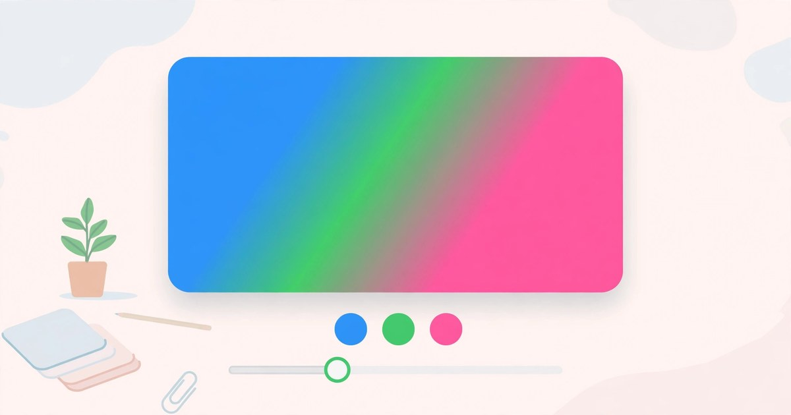

How to Create a CSS Gradient Online
Build a smooth two- or three-colour gradient with a live preview — free, no signup.
November 9, 2026 · 5 min read

Open the Gradient Generator, pick two colours, set the angle, and copy the CSS it writes for you. The tool starts with blue #4F8FF7 at 0% and pink #FF6B8B at 100% on a 135-degree diagonal, and every change shows instantly in the live preview. Free, no signup, nothing leaves your browser.
What the Gradient Generator does
The tool opens with two stops set: #4F8FF7, a bright blue, at 0%, and #FF6B8B, a vivid pink, at 100%. The type is Linear and the angle 135 degrees — a blue-to-pink diagonal you can copy without touching anything.
Each stop has a colour picker, its HEX code in capitals, and a position slider from 0% to 100%. Drag a stop and the blend moves with it — put the blue at 30% and the first third stays solid blue, the blend squeezed into the rest. The tool sorts stops by position when it writes the CSS, so edit order never matters.
Add stop adds a third colour, green #22C55E, at the midpoint of your stops — with the defaults that is (0 + 100) ÷ 2 = 50%. Three is the maximum: a fourth add is refused with the warning "A maximum of 3 color stops is supported." Remove stop takes the last stop away, and refuses to go below two, warning "A gradient needs at least 2 color stops." Two stops give a clean blend; three add a colour in the middle.
The angle slider runs from 0 to 360 degrees and only applies to linear gradients — switch to Radial and it is disabled, because a circle has no direction. Copy CSS copies the line to your clipboard and confirms "CSS copied to clipboard." Everything runs in your browser: no account, no upload, nothing saved.
Create a CSS gradient in 5 steps
- Open the Gradient Generator — it loads instantly, no account needed.
- Choose linear or radial. Linear moves along a line at your angle; radial spreads outwards from the centre in a circle.
- Set your colours and positions. Click a swatch to pick a colour, then drag its position slider to place the blend.
- Set the angle. Drag the slider — 135 degrees is the default diagonal — and watch the preview turn.
- Copy the CSS. Click Copy CSS and paste the line into your stylesheet. Add a third stop first if you want a colour in the middle.
A worked example: the default gradient, line by line
Untouched, the CSS box reads:
background: linear-gradient(135deg, #4F8FF7 0%, #FF6B8B 100%);
Every part means something: linear-gradient is the function, 135deg the direction, #4F8FF7 0% starts the blue at the beginning and #FF6B8B 100% finishes the pink at the end. Between them the browser blends one into the other — exactly halfway, at 50%, the colour is the average of the two ends.
Blue #4F8FF7 is red 79, green 143, blue 247. Pink #FF6B8B is red 255, green 107, blue 139. Halfway: red (79 + 255) ÷ 2 = 167, green (143 + 107) ÷ 2 = 125, blue (247 + 139) ÷ 2 = 193. In HEX, 167 is A7, 125 is 7D and 193 is C1 — so the exact middle of the default gradient is #A77DC1, a soft mauve. That is the colour the eye lands on in the centre — and it is why the blend looks calm rather than split down the middle.
A worked example: adding the third stop
Click Add stop once and the tool adds green #22C55E at 50%, the midpoint of 0% and 100%:
background: linear-gradient(135deg, #4F8FF7 0%, #22C55E 50%, #FF6B8B 100%);
Now the gradient runs blue to green across the first half and green to pink across the second, green strongest in the middle. Drag the green stop to 30% and the blue-to-green blend compresses into the first third while the green-to-pink blend stretches across the remaining 70% — the same three colours, a completely different feel.
CSS measures angles clockwise from straight up: 0 degrees bottom to top, 90 left to right, 180 top to bottom, 270 right to left. The diagonals sit between them — 45 degrees from the bottom-left corner to the top-right, and the default 135 degrees from the top-left to the bottom-right. A small change makes a visible difference: 90 degrees gives clean horizontal bands, 135 the diagonal sweep most sites use.
Switch to Radial and the line becomes:
background: radial-gradient(circle, #4F8FF7 0%, #FF6B8B 100%);
Linear or radial — which should you pick?
| Type | How it blends | Best for |
|---|---|---|
| Linear | Along a straight line at your angle, 0 to 360 degrees | Page backgrounds, banners, buttons, cards |
| Radial | Outwards from the centre in a circle | Spotlight effects, badges, hero sections, glows |
A near-sharp edge with only three stops
Sometimes you want a hard line instead of a blend, like a two-tone banner. Put two stops almost on top of each other: blue at 0% and 50%, pink at 51% — flat blue for the first half, a 1% blend, then flat pink. At normal screen sizes the 1% blend is invisible.
5 mistakes that make a gradient look wrong
- Putting body text on a busy gradient. Text needs a calm, even background — use the gradient for the banner or button, and keep the text area one solid colour, ideally the darkest stop.
- Dragging stops too close together by accident. Two stops a few percent apart make a hard band in the middle of a smooth blend — keep at least 20% between stops unless you want a sharp edge.
- Forgetting the angle. 0 degrees and 180 degrees are the same blend flipped — if your gradient looks backwards, check the angle first.
- Copying the preview instead of the code. A screenshot is an image, not CSS — always use Copy CSS and paste the line, which is the part your site can use.
- Using three stops when two would do. A third colour adds interest, but a muddy middle if the colours clash — if two already look right, stop there.
Frequently asked questions
Is the Gradient Generator really free?
Yes. Every gradient and every copy is free, with no account and no signup — and nothing to install.
How many colour stops can I add?
Between two and three. The tool starts with blue #4F8FF7 at 0% and pink #FF6B8B at 100%. Add stop adds a third, green #22C55E, at the midpoint; a fourth is refused with a warning, and so is removing stops below two.
What is the difference between linear and radial gradients?
Linear moves along a straight line at your angle — 135 degrees by default, diagonally from the top-left corner to the bottom-right. Radial spreads outwards from the centre in a circle, so the first colour sits in the middle and the last fills the edges.
Where do I paste the CSS the tool gives me?
Paste the background line into your stylesheet — on a button, a banner or the page background. The line is complete as it stands — no extra code is needed.
Related tools: Gradient Generator · Colour Palette Generator · Colour Picker · Favicon Generator · Image Format Converter